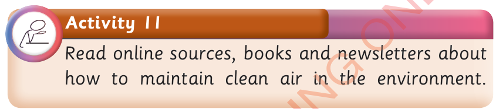

environment and to use water carefully. By conserving water sources, we will avoid waterborne diseases such as cholera, bilharzia, typhoid and diarrhoea. We can also prevent or reduce the drying up of water sources and a water shortage.
Maintaining clean air in our environment

Human beings need clean air to improve their health. It is everyone’s responsibility to ensure that the environment around him or her is clean. To live in an environment with clean air, we should control the sources of air pollution such as smoke from industries, vehicles and homes. The dust from mining activities also contributes to air pollution. One of the methods to reduce air pollution is to plant trees to reduce pollutants like carbon dioxide. This is because trees produce oxygen and absorb carbon dioxide during photosynthesis. Furthermore, we should avoid improper waste disposal, because decayed waste emits a bad smell. Therefore, we should conserve our environment to obtain clean air, protect human health and the lives of other organisms.